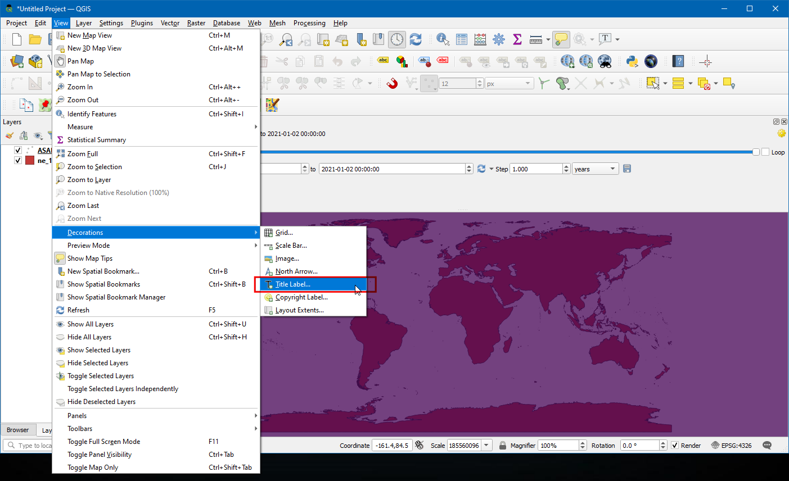

Animating Time Series Data (QGIS3)¶
Time is an important component of many spatial datasets. Along with location information, time providers another dimension for analysis and visualization of data. If you are working with dataset that contains timestamps or have observations recorded at multiple time-steps, you can easily visualize it using the Temporal controler. Temporal controler allows you to view and export ‘slices’ of data between certain time intervals that can be combined into animations.
참고
Temporal Controller is available from QGIS 3.14 onwards. For older versions of QGIS, the Time Manager plugin provides a similar functionality.
Overview of the task¶
We will take a point layer of maritime piracy incidents, create a heatmap visualization and create an animation of how the piracy hot-spots have changed over past 2 decades.
Other skills you will learn¶
Using the Heatmap renderer for quick visualization of dense point data
Creating and using custom map projections
Get the data¶
National Geospatial-Intelligence Agency’s Maritime Safety Information portal provides a shapefile of all incidencts of maritine piracy in the form on Anti-shipping Activity Messages. Download the Arc Shape file version of the database.
Natural Earth has several global vector layers. Download the 10m Physical Vectors - Land containing Land polygons.
For convenience, you may directly download a copy of the above layers from below:
Data Source: [NGA_MSI] [NATURALEARTH]
Procedure¶
In the QGIS Browser Panel, locate the directory where you saved your downloaded data. Expand the
ne_10m_land.zipand select thene_10m_land.shplayer. Drag the layer to the canvas. Next, locate theASAM_shp.zipfile. Expand it and select theasam_data_download/ASAM_events.shplayer and drag it on to the canvas.

Once the layer is loaded, you can see the individual points representing incidents of piracy locations. There are thousands of incidents and it is difficult to determine with more piracy. Rather than individual points, a better way to visualize this data is through a heatmap. Select the
ASAM_eventslayers and click the Open the layer Styling Panel button in the Layers panel. Click theSingle symboldrop-down.

In the renderer selection drop-down, select
Heatmaprenderer. Next, select theViridiscolor ramp from the Color ramp selector.

Adjust the Radius value to
5.0. At the bottom, expand the Layer Rendering section and adjust the Opacity to75.0%. This gives a nice visual effect of the hotspots with the land layer below.

Now let’s animate this data to show the yearly map of piracy incidents. Right click on
ASAM_eventlayer, and chooseProperties.

In the Layer properties dialog box, select the Temporal tab and enable it by clicking the checkbox..

The source data contains an attribute
dateofocc- representing the date on which the incident took place. This is the field that will be used to determine the points that are rendered for each time period. SelectSingle Field with Data/Timein Configuration Drop down menu,dateofoccas Field.

Now a clock symbol will appear next to the layer name. Click on the
Temporal Control Panel(Clock icon) from Map Navigation Toolbar.

Click on the
Animated Temporal Navigation(play icon) to activate the animation controls. Click the Set to Full Range (refresh icon) next to Range to automatically set the time range to the match the dataset.

Now you are ready to preview the animation. Set the Step as
1 Yearthen click the Play button to start the animation.

참고
If the animation is too fast, you can adjust the frame rate by clicking Temporal Settings (yellow gear icon) at top-right corner of Temporal Controller panel. Decreasing the the frame rate (frames per second) will slow down the animation.
It would be helpful to also display a label showing the current time frame on the map. We can do that using the built in Title decoration. Go to .

Click the checkbox to enable it and click
Insert an Expressionbutton and enter the following expression to display the year. Here the variable@map_start_timecontains the timestamp of the current time slice being displayed. So we can use that timestamp and format it to display year of occurrence. See the QGIS Documentation for details on various supported formatting options for the timestamp.
format_date(@map_start_time, 'yyyy')
Select font size as
25, set background bar colour asWhiteand set the transparency to50%. In Placement chooseBottom Right. Now click Ok.

Once the parameters are set accordingly, the year will display as shown. To export these as images and convert them as GIF select the
Export Animation(save icon) in the Temporal control window.

Click on the
...Output directory to choose the directory at which the images will be saved.

Under the Extent select the layer. Click Save.

Once the export finishes, you will see PNG images for each year (total 18 images) in the output directory.

Now let’s create an animated GIF from these images. There are many options for creating animations from individual image frames. I like ezgif for an easy and online tool. Visit the site and click Choose Files and select all the .png files. Once selected, click the Upload and make a GIF! button. Once created, you can download the GIF using the Save button.

If you want to report any issues with this tutorial, please comment below. (requires GitHub account)